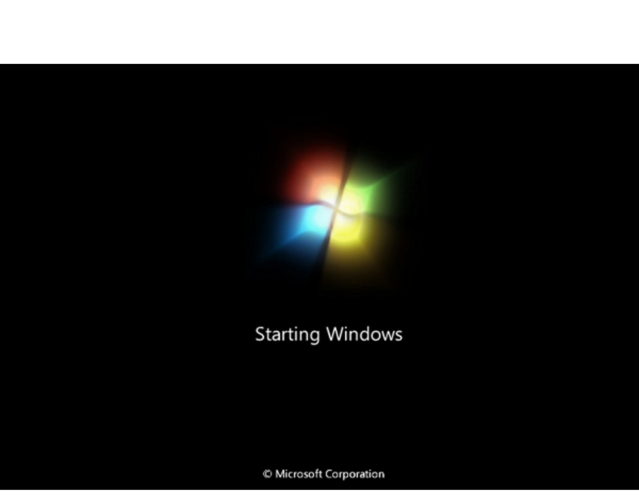
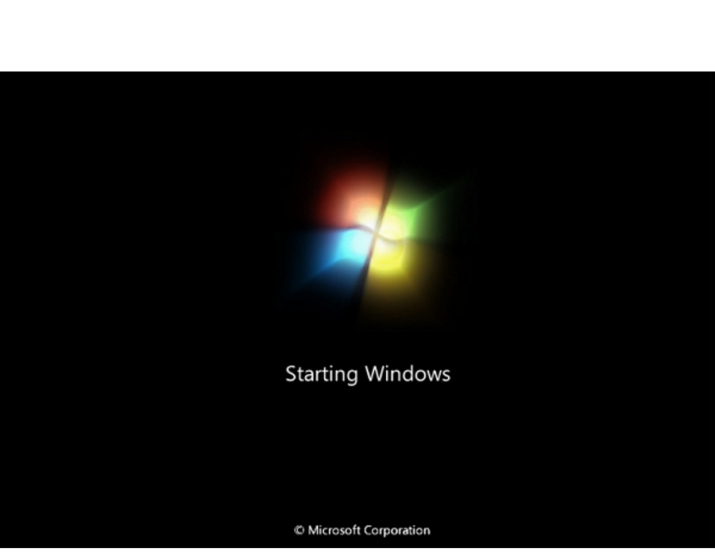

Iniciación a la informática e Internet
Resumen
Apreta la tecla → para avanzar.

Máquina electrónica que recibe y procesa datos para convertirlos en información útil. Formada principalmente por los siguientes componentes:


Cambia de foto con las teclas: ↑ y ↓

En informática, la secuencia de arranque, (boot o booting en inglés) es el proceso que inicia el sistema operativo cuando el usuario enciende una computadora. Se encarga de la inicialización del sistema y de los dispositivos.


 

Cambia de foto con las teclas: ↑ y ↓
El Sistema operativo (SO) es el software que actúa de interfaz entre los dispositivos de hardware y los programas usados por el usuario para utilizar un computador.
Windows 7 es el sistema operativo que estamos viendo a lo largo del curso.

Los botones de acción de ventana los veremos en cualquier aplicación que abramos en Windows 7.
 Cerrar Al pulsarlo la aplicación se cerrará definitivamente.
Cerrar Al pulsarlo la aplicación se cerrará definitivamente. Minimizar Al pulsarlo la aplicación se ocultará.
Minimizar Al pulsarlo la aplicación se ocultará. Restaurar Si una ventana está maximizada, al pulsarlo la aplicación volverá a su tamaño original.
Restaurar Si una ventana está maximizada, al pulsarlo la aplicación volverá a su tamaño original.